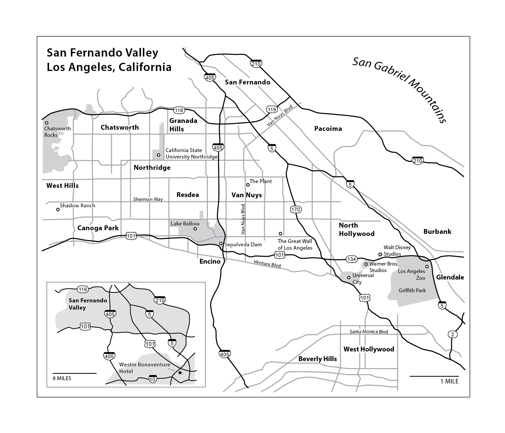

san fernando valley map
This map was created for the print edition of the November 2012 AAG Newsletter while I was midway through my very first cartography class. While not the pinnacle of my cartographic career, this is the map where I fell in love with the cartographic design process and the constant negotiation involved in depicting place. This map also professionalized cartography for me: it changed the way I thought about making maps from something that was done in school to a potential career path in its own right. And as if the map was not already significant enough, it also allowed me to get my foot in the door at AAG, where through its creation I worked closely with the fantastic Communications team that I would later join.
Main takeway: If Mark Monmonier asks if you want to take on a side project, you say yes and don’t look back. It might change your life.
To read Eric D. Carter’s article that this map was created to accompany, click here.
(click here to view the full map)